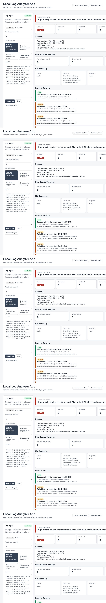

5
Detection Types
Failed logins, port scans, account lockouts, suspicious successful logins, and new source IP activity.
MITRE
Mapped Alerts
Alerts connect to concepts such as Brute Force, Valid Accounts, and Network Service Discovery.
IR
Response Workflow
IOC summary, timeline, analyst questions, evidence picker, saved cases, and remediation suggestions.
Screenshots

How To Demo It
- Open the live app and click Account takeover.
- Review the risk score, IOC summary, and incident timeline.
- Use Analyst Questions to explain what should be investigated.
- Check Remediation Suggestions for safe response steps.
- Select evidence rows and create a saved case report.
Cybersecurity Concepts Shown
Log Analysis
Parses simple text logs into normalized events with users, source IPs, target IPs, timestamps, and event types.
Detection Engineering
Uses small, readable rules for brute force, port scans, lockouts, and suspicious successful logins.
Incident Response
Turns alerts into case evidence, investigation questions, timeline context, and remediation guidance.
Security Fundamentals
Connects to OWASP awareness, firewall thinking, cryptography basics, the CIA triad, and MITRE ATT&CK.
Project Links
Limitations
- Uses fake sample logs for safe portfolio practice.
- Does not monitor a real network in real time.
- Does not replace a production SIEM, EDR, firewall, or identity platform.
- Remediation suggestions are educational and should follow company approval processes in real environments.